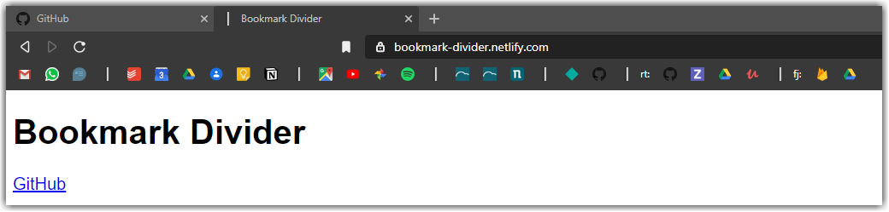
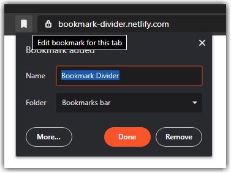

Un divisor de marcadores independientemente del navegador (Google Chrome, Firefox, Safari, Internet Explorer, Microsoft Edge).
Si tienes muchos marcadores, es mejor verlos por imagenes. Pero los marcadores normalmente solo se ajustan en carpetas. En vez de carpetas puedes usar esta página para tener este tipo de divisor.


Inspirado en FirePanthers https://su.at/archive/bookmark/.